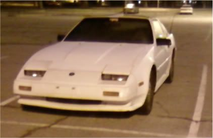

-
Can you provide more information on doing this with Nistune? I was told Nistune and the Z31 ECU could not support a MAP setup.FlawleZ wrote: You could delete the MAF entirely and run a MAP setup."produce first.talk second." -
Best information ever.Careless wrote: I just want to add to this info.
There are some 486 Intel and AMD Pc's that use a version of Pheonix Bios and AMI Bios that has an executable flash.exe file to burn the on-board flash bios to the motherboard. Some are 28 pin, some are 30 pin, some are 32 pin.
If you possess one of these computers (as I have a 32 pin version), it is very easy to turn what would seem like a useless CPU into a very reliable chip burner.
In the bios, you could change the settings "Cache BIOS to Disk" or "Cache BIOS to RAM" (If I remember, this is BIOS Shadowing). It will then load the computer, load your boot disk with DOS on it, and load you into the A: prompt which you can then feed a disk with the flash.exe and the bin file that contains the proper Fuel Map/Nistune BIN file.
You can then remove the factory ROM chip from the motherboard without shutting the computer down, pop yours in, and go to town with flashing any BIN file you want on there.
I have an ECS K7VZA motorboard which is for an old AMD setup, and I've used it numerous times in the past to make HomeBrew mod-chips for the original XBOX console before they released various solutions to make this process easier and more configurable.
Just more info if anyone cares to pull their old junker out of the attic.
I no longer have my BK844usb so I will give this a shot.
Of course..........we could go full OBD2 with a late VG single cam ecu and just program it through the OBD2 port.
I'll let you guys know how that turns out. -
[quote]mace350 wrote: [quote=Mike_GruiZinga][quote=FlawleZ] You could delete the MAF entirely and run a MAP setup.
Can you provide more information on doing this with Nistune? I was told Nistune and the Z31 ECU could not support a MAP setup.
I think hes thinking of megasquirt.
Uh…no.
Mike_GruiZinga wrote:Sure.Can you provide more information on doing this with Nistune? I was told Nistune and the Z31 ECU could not support a MAP setup.Originally posted by FlawleZ
You can use a map sensor with NIStune if you use an HKS VPC for a Z32. Set NIStune to the Z32 MAF selection and voila!545 RWHP & 540 RWTQOriginally posted by Andrew84zx
tell her your car is so fast it will make her panties fly off

-
dont go on here much these days… but just letting you guys know we have Type 1 boards back in stock this week :-D -
ok i gots the nistune in today and i located the large chip to be removed was wondering where (in pics) does the 4 xtra wires go been loking but found nothing and can i run it for a while until i can get to the dyno shop??
CUSTOM HEADLAMPS/CARBON FIBER/FT&RTSB/OIL COOLER/LED'S/VG30ETT/PATHFINDER INTAKE MANIFIOLD/2.5" EXHAUST/NISMO MUFFLER/HKS TT, BOV, BOOST GUAGE/Q45 BBK/K&N/2x GARRETT T-25/NISTUNE/...... -
it's, or it should be, detailed in the install guide.

1988 300zxt. gt35, stance, etc. Wheels: Varrstoen ES2 18x9.5 et-13 225/40. 18x10.5 et0 245/40
1990 jetta vr6'd -
ok so i read the manual a few times before junping ito this, using my 87 maxima ecu just to see if it works. so i removed the eprom chip installed the socket, soildered the 4 wired to the 6802 processor. placed the old rom chip in the socket and it still works so im like sweet i did it right. then when i put in the nistune board in..... nothing..... the chip in the center of the 28pin outline (on the nistune board) gets hot(noticed this as i pulled it off of the board) so i was like DAMN how could i fubared this. went over the manual again checked solder points all good. placed in the old rom chip and it still works, so whats the deal is the board that i got defective??
CUSTOM HEADLAMPS/CARBON FIBER/FT&RTSB/OIL COOLER/LED'S/VG30ETT/PATHFINDER INTAKE MANIFIOLD/2.5" EXHAUST/NISMO MUFFLER/HKS TT, BOV, BOOST GUAGE/Q45 BBK/K&N/2x GARRETT T-25/NISTUNE/...... -
i was trying to find some info on nistunes site about a federal car. i understand it can go one way, but can it go the other way…in other words, can i use a non federal ecu in my car?
i want to have my stock federal ecu as a backup just for the heck of it and i can get another ecu at the junkyard, i think i saw a 86 turbo, and 88 turbo and a few 87 NA's and alot of 86 na's.
i think there was a few things like EGT sensor that i dont ahve and things like that.My Build Thread -
I had a quick question. Is it still desirable to get an 88T + ECU, or can should I just use the stock 86T? I had hear you can load up images from the other years to Nistune but wouldn't you still need the same style o2? I'm sorry for the noob questions, I am just a tad overwhelmed.
My last Z was totaled before nistune really was an option so I have ALOT of catching up to do. My new Z is an 86T 5spd.
Thank you for the help.
MikeDD:
86 Black Turbo 5spd
The Fallen:
84 red n/a auto Slicktop, 86 Black 2+2 n/a 5spd
Parting Currently:
86 White Turbo 5spd, 88 n/a 5spd, 84 AE, 88 Shiro #64
Garage Sale -
do a little searching, i have no idea but i think you have to use resistors for the fuel injectors.
type in 'nistune' i flew by them a few times. and the forums on nistune has hecka infoMy Build Thread -
i'd get the 88 ecu just for the simplicity of soldering those 4 wires lol. no messing with dropping them onto a chip, just put em right into the pcb and be done with it.
i'm not sure about the 86 ecu but i know the earlier ecu's had problems with a lean surge condition, i am also unsure if nistune can get rid of that, but it wouldn't be worth it to try and find out.
the one thing you run into with the 88t+ ecu's is the daughterboard for the detonation sensor, which is a pain to work around when installing nistune.
1988 300zxt. gt35, stance, etc. Wheels: Varrstoen ES2 18x9.5 et-13 225/40. 18x10.5 et0 245/40
1990 jetta vr6'd -
I believe the 88NA ECU is still the most desirable ECU for NIStune since it is essentially the 88T without the daughterboard.MADMIKE wrote: I had a quick question. Is it still desirable to get an 88T + ECU, or can should I just use the stock 86T? I had hear you can load up images from the other years to Nistune but wouldn't you still need the same style o2? I'm sorry for the noob questions, I am just a tad overwhelmed.
My last Z was totaled before nistune really was an option so I have ALOT of catching up to do. My new Z is an 86T 5spd.
Thank you for the help.
Mike545 RWHP & 540 RWTQOriginally posted by Andrew84zx
tell her your car is so fast it will make her panties fly off
-
Ok just did a little more research. The problem I see is that the 02 sensor is different.FlawleZ wrote:
I believe the 88NA ECU is still the most desirable ECU for NIStune since it is essentially the 88T without the daughterboard.
If I was to take use a 89NA board, I would need to re-wire and go with the larger bung for the Zirconium o2. How much of a Pita is the daughter-board on the Turbo ECUs? I've read that the Turbo Proms can be swapped onto the NA board, can't I just remove/disable the daughter board? Is there an advantage to running with the Titania o2 over the Zirconium? Anyone have a decent photo of the guts of an 89T ECU so I can see what I have to work with?
Just trying to shed some light on all of this.DD:
86 Black Turbo 5spd
The Fallen:
84 red n/a auto Slicktop, 86 Black 2+2 n/a 5spd
Parting Currently:
86 White Turbo 5spd, 88 n/a 5spd, 84 AE, 88 Shiro #64
Garage Sale -
Removed due to me being a dumb a$$.
Also anyone that needs these soldered in. I am a solder tech in the Navy. I will do it for you for free just have to pay shipping here and back. Once I get mine set up I can even have a base tune set up if you would like.
So sleepy -
using this instruction form?
http://nistune.com/docs/NIStune_Type_1_ … lation.pdf
see pg. 12 (of 12?)
and no, you leave that other daughter board in, it's for the detonation sensor
1988 300zxt. gt35, stance, etc. Wheels: Varrstoen ES2 18x9.5 et-13 225/40. 18x10.5 et0 245/40
1990 jetta vr6'd

Copyright © 2006–. All rights reserved. Privacy Policy